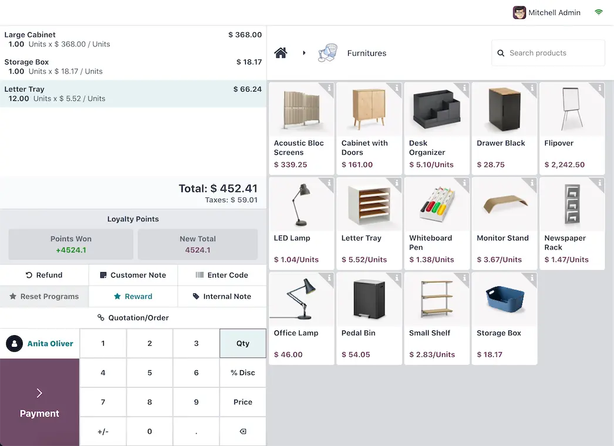

BIR compliance7 min read
EOPT invoice rules: what your invoice must show, and how to set it up in Odoo
The invoice replaced the OR: every field RR 7-2024 requires, the buyer-TIN rule, converted receipts and the Odoo invoice layout.
BIR noticeCAS and CBA users register their 2026 computerised books online through ORUS by 30 January 2027 (calendar-year taxpayers).Computerised books: register in ORUS by 30 Jan 2027.
CAS set-up in OdooA Permit to Use (PTU) is the BIR's permit for one specific cash register or POS machine, and the business that uses the machine needs it, approved by its RDO, before the machine records a single sale. The POS software has its own, separate accreditation. Here is how the two fit together, what the receipts must show, and what happens when a machine is retired.
Prepared by the TechNext Philippines Odoo and finance team, Taguig City.
By TechNext · · Updated · 9 min readBIR compliance
Key takeaways
"Is your POS BIR-accredited?" is often the first question a retailer or restaurant asks. It is only half the question. The BIR checks the POS software through accreditation, then gives the business a permit for each machine. Computerised books are registered separately, and since RMC 5-2021 a CAS gets an Acknowledgement Certificate rather than a PTU, as our guide to registering a CAS or CBA explains. This guide covers sales machines as the rules stand in October 2026.
RMO 24-2023 sets the current rules for cash register machines (CRMs), POS systems and other sales machines or software that generate invoices. It covers bundled POS, POS software on its own, handheld devices linked to a server and vending machines. A computerised accounting system on its own is outside this order.
| Accreditation | Permit to Use (PTU) | |
|---|---|---|
| What it covers | A machine brand, model, system or software version | Each machine the business uses |
| Who applies | The supplier, developer or provider. Taxpayer-users and "pseudo" suppliers can also apply | Filed in eAccReg by the software supplier or provider account for the taxpayer-user |
| What the BIR checks | A sworn statement and a system demonstration to a technical working group | The online application, approved by the RDO or Large Taxpayers office |
| Result | A Certificate of Accreditation with an Accreditation Number | A PTU and a Machine Identification Number (MIN) |
| Fee | Free under RMO 24-2023 | None, per the 2026 Citizen's Charter |
RMO 24-2023 also has a row for a POS that is a component of a CAS. That POS still needs both accreditation and registration. A registered accounting system does not cover the tills that feed it.
Special purpose machines, such as ATMs, price checkers and ordering machines, need a PTU but no accreditation.
To be accredited, the machine or software must have the features listed in RMO 24-2023, declared in a notarised sworn statement. They include an accumulated grand total of sales, a tamper-free design with non-volatile memory, a transaction log and e-journal, sales readings and back-end reports, a sequential invoice series with a reprint function, data retention and sales data transmission.
Accreditation is tied to a version. RMO 24-2023 treats version upgrades and system enhancements in general as major enhancements, which need a new accreditation. Minor changes, such as rearranging screen fields, only need a notice to the RDO. This matters for any POS that updates often, Odoo included.
RMO 24-2023 lists what a machine-generated invoice must carry. The main items:
Under the EOPT Act, RR 11-2024 let CRM and POS users change "Official Receipt" to "Invoice" or a similar name without first informing the RDO. It counted as a minor enhancement: no re-accreditation for the supplier and no new PTU for the user. The renamed invoices continue the last approved OR series, and a notice of the starting invoice number was due to the RDO within 30 days of the change or by 31 December 2024, whichever came first. The changeover itself was due by 31 December 2024, with extensions of up to six months only if approved.
A newer change is coming. RR 6-2026 adds creditable withholding tax, where it applies, as a separate item on the invoice. RMC 112-2026, as reported by the Daily Tribune, gives existing CRMs and POS systems until 31 March 2027 to make the change. For the full field list, see our EOPT invoice requirements guide.
RMC 72-2025 told suppliers whose accreditation ran to 31 July 2025 to apply again under RMO 24-2023. Citing RR 6-2022, it confirmed that PTUs do not expire when the software's accreditation does.
RMO 24-2023 expects a POS to produce sales readings and back-end reports. The Z-reading matters most when a machine is retired: a PTU cancellation asks for the Z-reading as of the last day of use, and the RDO officer evaluates the readings when inspecting the machine.
On reporting, RMO 24-2023 refers to sales reported through the BIR's Electronic Sales (eSales) Reporting System, under RR 16-2018. Ask your accountant whether your registration requires it. RR 26-2025 says POS users will later issue e-invoices too, once the BIR has a system to store and process the data and issues a separate regulation. RMC 98-2026 adds that invoices a POS prints are not e-invoices unless the system can also send them to the buyer and report the sales data to the BIR. Our BIR e-invoicing guide covers who is covered now.
The 2026 Citizen's Charter lists PTU cancellation for retiring a machine, a new franchisee, a transfer to another branch, or closing the business or a branch. You file at the RDO or LT office where the machine is registered, with:
An RDO officer inspects the machine and its readings. RMC 69-2020 asks you to notify the office within five days of the machine's last use. If a supplier's accreditation is revoked, RMO 24-2023 says its users' PTUs are not automatically revoked, unless the violation was the user's own.
From the Odoo 19 documentation:
Odoo's Philippine localisation in version 19 covers accounting: taxes, BIR reports and the 2307. Its documentation does not describe a Philippine POS receipt format, a MIN or PTU field, or BIR sales readings. The Odoo 20 release notes list Philippine changes for accounting invoices and payroll, but no BIR-related POS change. So any BIR receipt fields and readings on Odoo POS would come from configuration and customisation, and that alone does not make the POS usable for registered sales: the exact version you run still needs accreditation, and each machine a PTU. A later change to an accredited version can itself count as a major enhancement.
Under the Citizen's Charter, only the software supplier or provider account in eAccReg can file a POS PTU, and the receipt footer must name the accredited supplier of that version. TechNext does not hold POS accreditation and does not file PTUs. Before go-live, settle with your accountant, your RDO and your POS supplier who holds the accreditation for the version you will run, who files each PTU, and how upgrades are handled. Our overview of BIR rules for your accounting system shows how the POS sits next to your books.

You don't need to hire your own team. A TechNext adviser reviews your stores, tills and current registrations, then our team in Taguig City configures Odoo POS, the receipt layout and the link to Accounting. The accreditation and the PTU are filed by your accredited POS supplier, not by TechNext. See how we work with retail and food and beverage businesses, our BIR CAS set-up, and Odoo in the Philippines.
Rules change. This article reflects RMO 24-2023, RR 11-2024, RMC 69-2020, RMC 72-2025, RR 26-2025, RR 6-2026, RMC 98-2026, RMC 112-2026 (from press reports) and the BIR Citizen's Charter 2026 (1st edition), with the Odoo 19.0 documentation and Odoo 20 release notes, as available on 24 October 2026. Each business registers its own machines at its own RDO. TechNext is not affiliated with the BIR, does not file accreditation or PTU applications, and cannot promise a registration outcome. It is not tax advice: confirm with your accountant or RDO before you act.
It is the BIR's permit for one specific CRM or POS machine used by one business. It comes with a Machine Identification Number, and the PTU number and date issued are printed on the machine's invoices.
No. Accreditation covers the software version. Each machine the business uses still needs its own PTU, filed in eAccReg by the supplier on the business's behalf.
No. RMC 72-2025, citing RR 6-2022, says PTUs do not expire and need not be cancelled when the software's accreditation expires.
No. RMO 24-2023 lists a POS that is a component of a CAS as needing both accreditation and registration. The CAS Acknowledgement Certificate covers the accounting system.
Odoo POS receipts, invoices and register closing can be configured, but configuration alone does not make a POS usable for registered sales. The version you run still has to be accredited, and each machine needs its own PTU, filed by the accredited supplier. Settle who that is with your accountant, your RDO and your POS supplier before go-live.
About TechNext. TechNext Pte. Ltd. is an affordable Odoo ERP partner for SMEs: an Odoo Ready Partner headquartered in Singapore, with its main development and consulting hub in Taguig City, Metro Manila. We plug Odoo into the system you already run, and our own experts implement it end to end (discovery, configuration, data migration, training and support), set up with the Philippine (BIR) and Singapore (GST) localisations, for clients in 25+ countries. We are not affiliated with, accredited by or acting for the BIR or any government agency, and we do not file or register on your behalf. About us · Get my BIR CAS plan
The invoice replaced the OR: every field RR 7-2024 requires, the buyer-TIN rule, converted receipts and the Odoo invoice layout.
CAS vs CBA, the Acknowledgement Certificate, the documents the BIR asks for, and how the e-invoicing PTI fits on top.
Pre-printed ATP invoices vs system-generated invoices: who needs an ATP, back-up booklets for a CAS or POS, no more five-year expiry, and the Odoo invoice layout.
TechNext sets up your Odoo, can build your website and brand on it, and stays on after go-live, in Singapore and the Philippines. An adviser reviews your situation first.